Whisky Blender
aka Andrews of Bothwell
Product / UI / UX / Print / Digital / HTML / CSS
whiskyblender.com
Whisky Blender started with a drunken conversation between me and my best friend, Andy, about how closed-off whisky felt. Blending – the thing that defines most whiskies – was a secret world for experts. We wondered: what if anyone could make their own?
There was no brief, no client, no plan. We just decided to try it. I designed and built the first version from scratch – the website, the product, the brand – all evolving together. People could experiment, tweak ratios, save blends, name them, and eventually buy a bottle that felt like theirs.
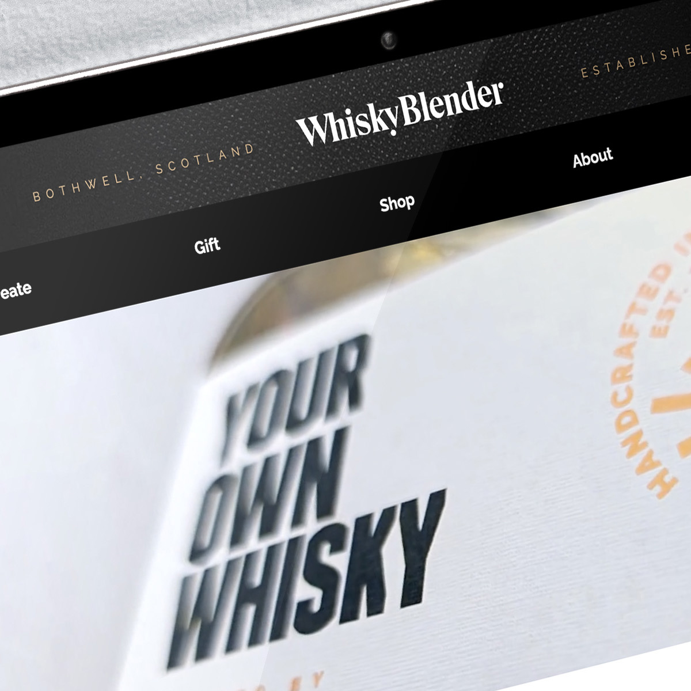
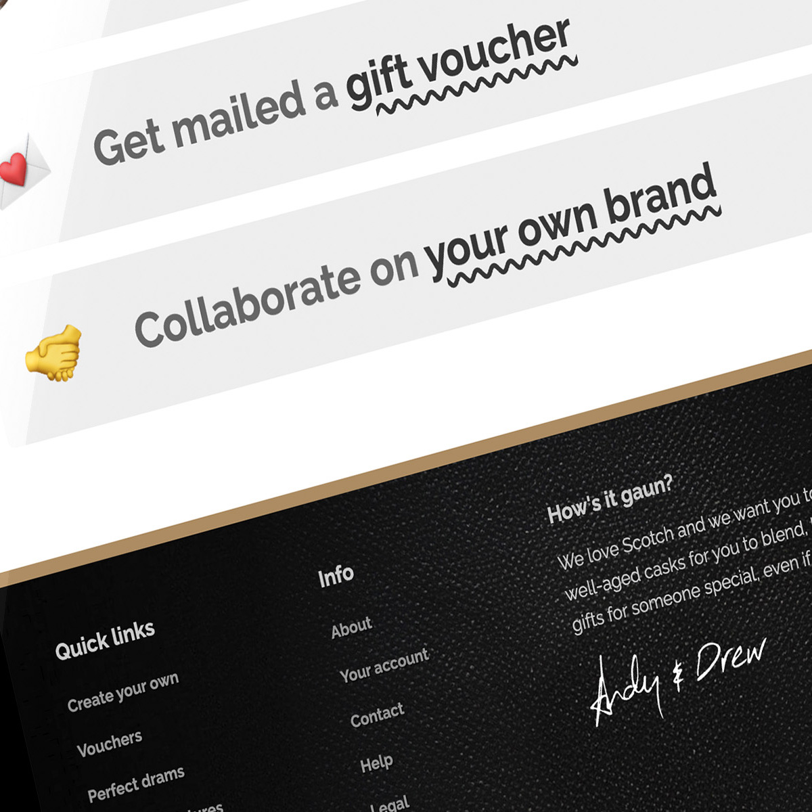
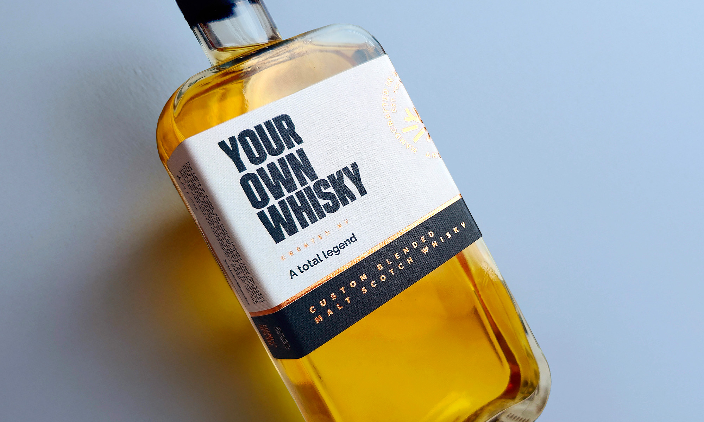
Over time, Whisky Blender became more than just personal blends. We launched our own bottlings: the award-winning Yer Aunt Fanny’s Cat’s Arsehole, the playful Wee Man’s Blend, and Doctor’s Special, a mid-20th-century brand we revived. We also explored storytelling through art, like the paired Scotsman & Englishman bottles inspired by Rex Whistler, and licensed works from the National Galleries of Scotland to celebrate iconic Scottish cities and figures, from Robert Burns to Mary Queen of Scots.
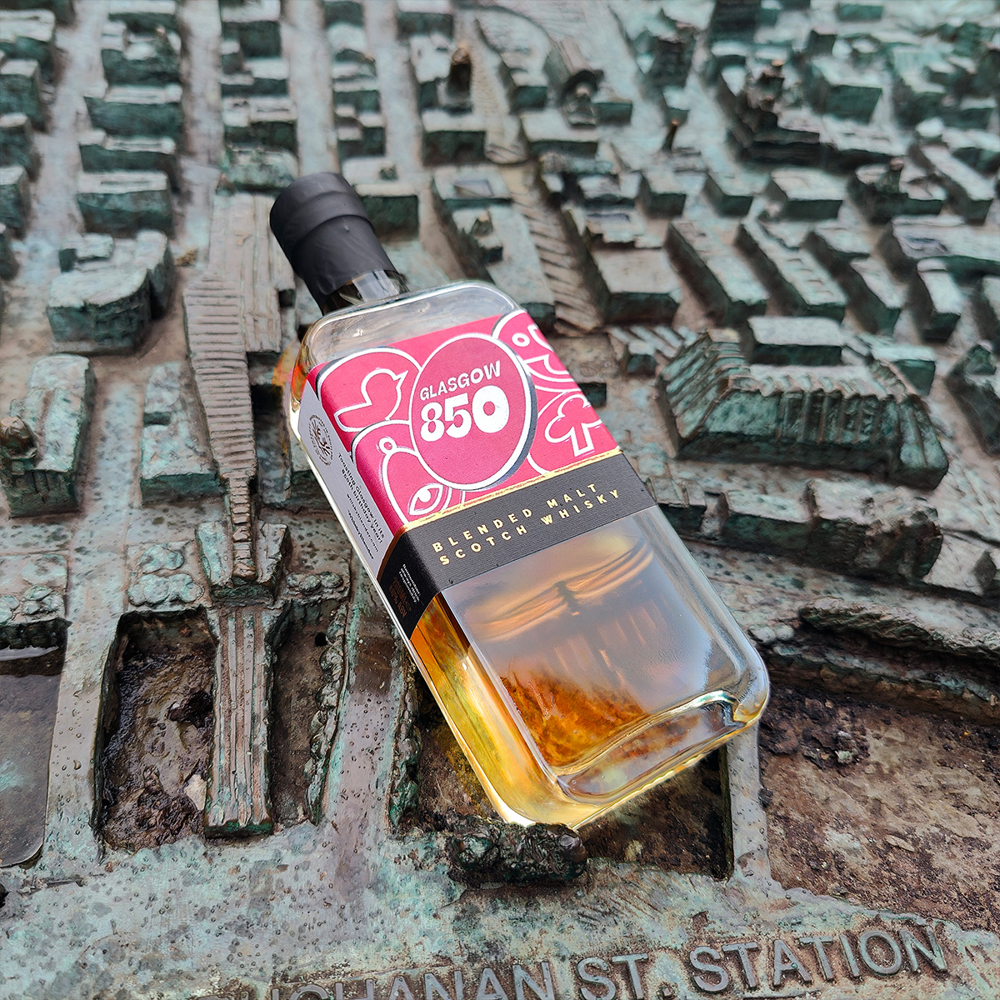
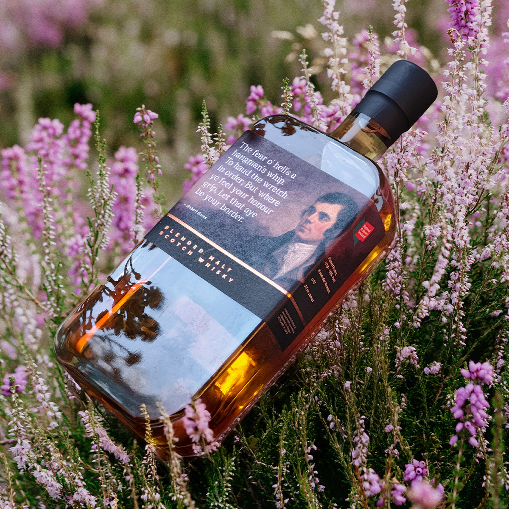
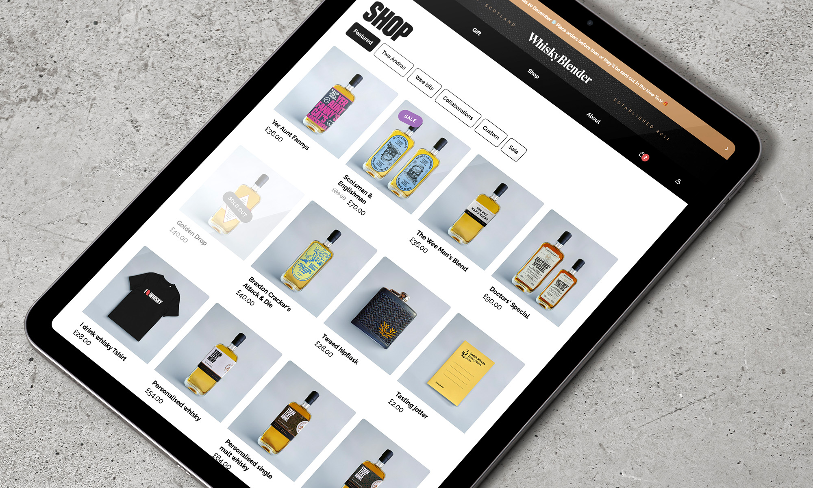
We also help other brands create their own whisky. One favourite project was The Golden Drop, an in-house Speyside-style single malt for The Canny Man’s, a historic Edinburgh pub. Initially only 300 bottles were released, and they sold out almost instantly, making it a coveted dram for visitors and locals alike.
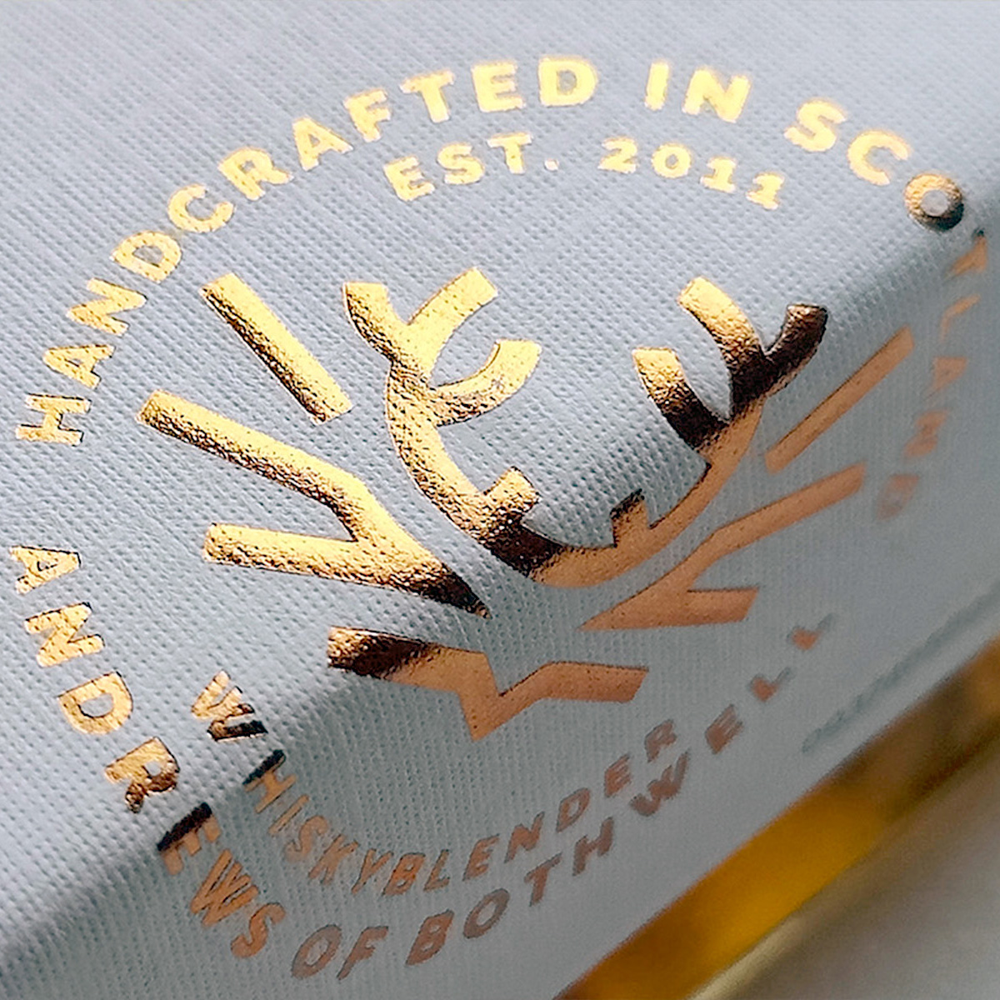
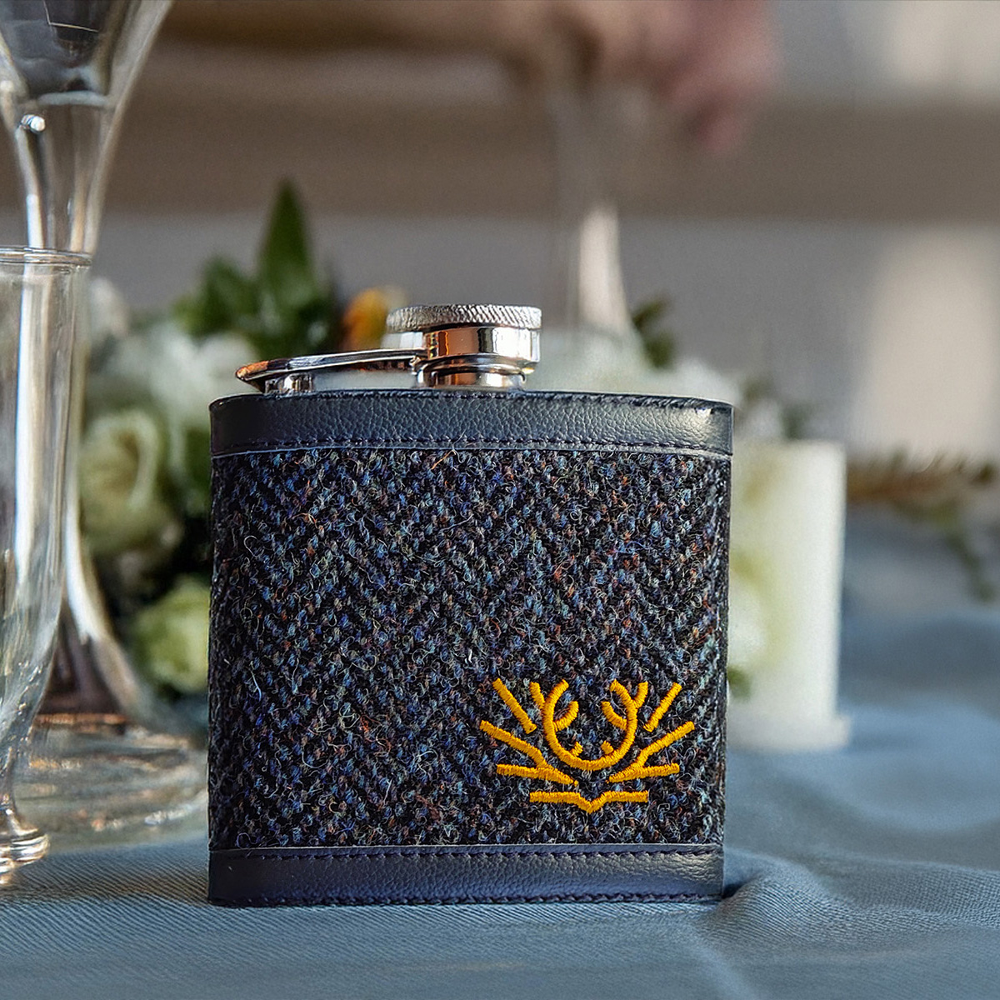
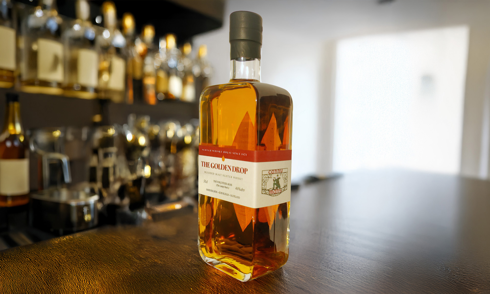
Even our marketing plays with context. We once ran an ad in the Ryanair inflight magazine. Initially we thought about encouraging people to rip it out – as they wouldn't be able to access the site during the flight, and we couldn't expect them to just remember us after they landed – but that would mean only one visitor per magazine. Instead, we convinced them to photograph it. The ad quietly traveled with them, resurfacing days later in a camera roll, waiting to be rediscovered.
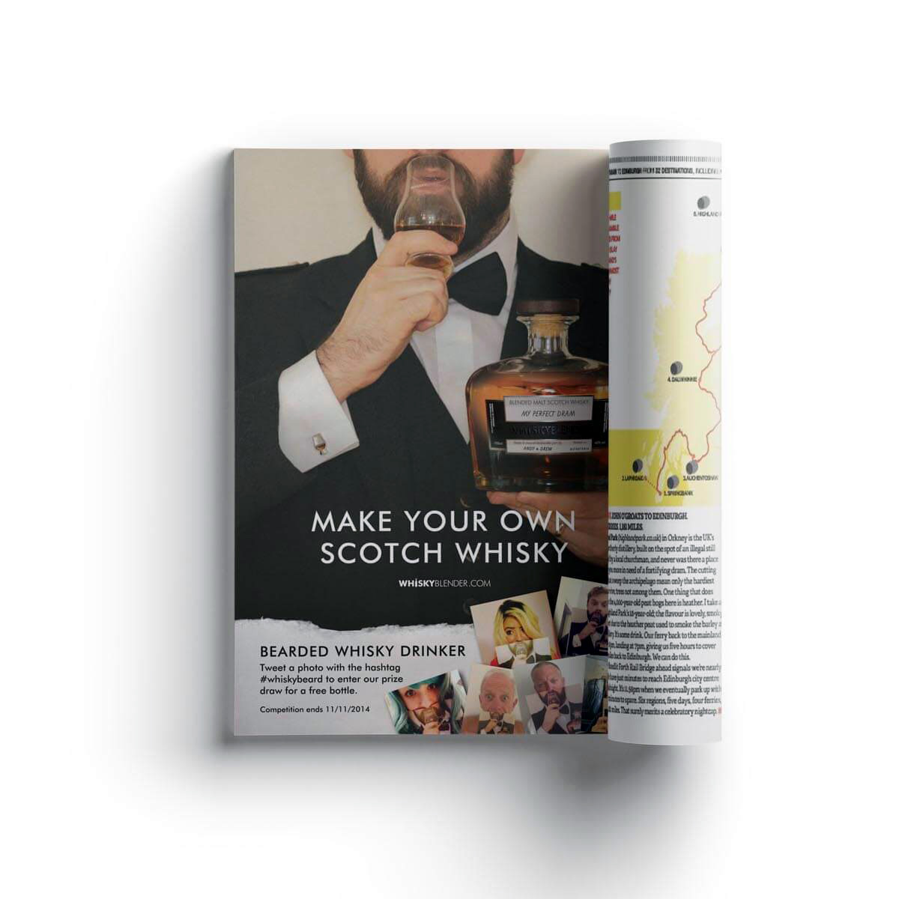

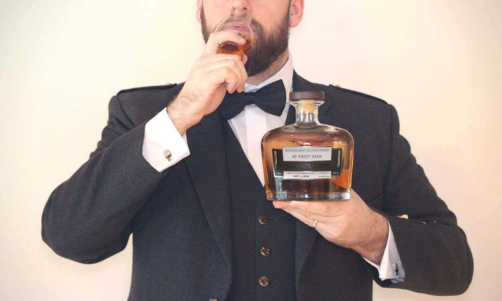
That’s Whisky Blender in a nutshell. From personal blends to limited releases, collaborations, and playful marketing, it’s never about doing the obvious. It’s about understanding behaviour, context, and memory – and designing around it. Built messy, evolving, and entirely hands-on, it’s a project that proves a half-serious idea can become something people genuinely connect with.